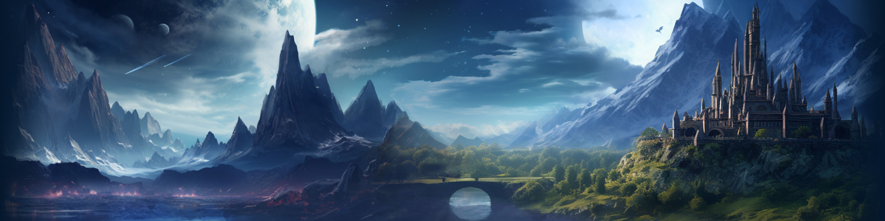
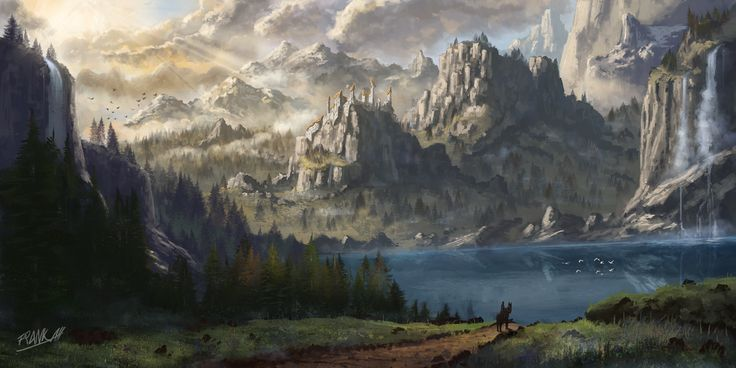
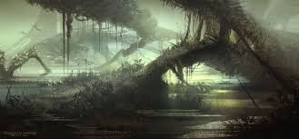
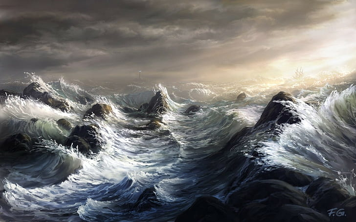

Neverwinter Wood
A vast and ancient forest, home to fey creatures, lingering magic, and ruins of civilizations long past. A place where few dare tread without purpose.

The High Forest
One of the greatest woodlands in Faerûn, holding elves, druids, and beasts both wondrous and fearsome. Some say it is the last refuge of forgotten gods.

The Star Mounts
Towering peaks that pierce the heavens, shrouded in mystery and legend. It is whispered that dragons and celestial beings watch over these summits.
The Sword Mountains
A rugged range of craggy heights, home to lost dwarven holds, wandering giants, and hidden dangers lurking in the shadows.
The Mere of Dead Men
A cursed swamp of ruins and undead horrors, where travelers risk more than just getting lost.
The Sea of Swords
A tumultuous expanse of water that serves as the lifeblood of trade, yet harbors sea monsters, pirates, and ancient secrets beneath its waves.
